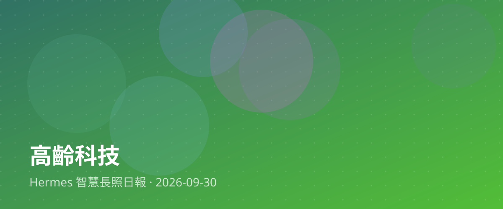

從失能前開始防守：普惠科技如何守護高齡新日常？

現代社會邁入超高齡化，長照的戰場早已不只是失能後的照顧，而是逐步前移至「失能前」的預防階段。近期業界關注的焦點，正轉向如何透過普及且實惠的高齡科技，守護長者的健康日常。這類科技不一定是高貴複雜的醫療儀器，而是融入居家環境、能隨手取得的日常輔具與智慧健康管理工具，讓長輩在不知不覺中維持身體機能，延緩退化。
對台灣的長照現場與家庭照顧者而言，這項轉變帶來了實質的喘息契機。過去，照顧壓力往往在長者失能後瞬間爆發，壓垮許多家庭。如果能在「失能前」就借助科技之力，協助長者自主管理健康、預防跌倒與慢性病惡化，不僅能降低照顧者的心理與體力負擔，更能大幅減輕整體社會的醫療照護成本，讓長照體系走得更穩健。
對於想投入長照產業的從業人員或青年朋友來說，這也意味著職涯發展的新契機。未來的長照不再侷限於傳統的勞務付出，而是需要更多懂得結合科技、理解高齡需求與溝通協調的跨域人才。從社區推廣到居家導入，科技與溫暖的照護服務並行，將是未來長照產業最具價值與發展潛力的核心所在。
📰 本篇主要新聞來源
🔗 相關新聞